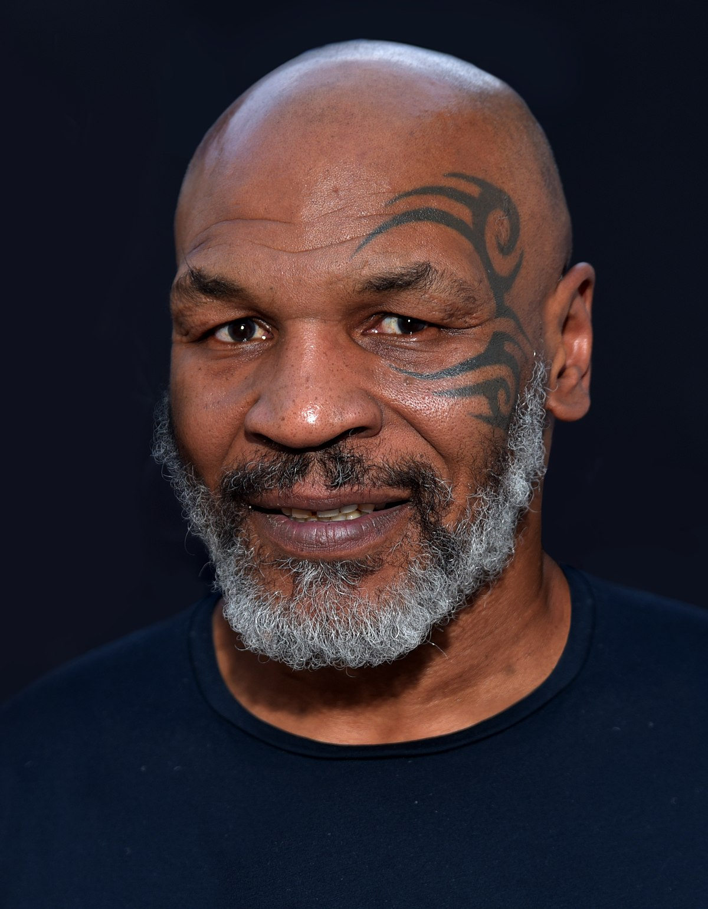

Майкл Джерард Тайсон - народ. 30 червня 1966, Браунсвілл, Бруклін, Нью-Йорк, США. Американський боксер-професіонал. Один з найвідоміших і впізнаваних боксерів в історії. Національний Олімпійський чемпіон США серед юніорів в першій важкій вазі (1982), абсолютний чемпіон світу у важкій ваговій категорії серед професіоналів (1987-1990), чемпіон світу за версіями WBC (1986-1990, 1996), WBA (1987-1990, 1996) , IBF (1987-1990), The Ring (1988-1990). Лінійний чемпіон (1988-1990). Є володарем багатьох світових рекордів, які не побитих донині: наймолодший чемпіон і абсолютний чемпіон світу у важкій вазі (20-21 років). Боксер, що витратив найменше часу з моменту дебюту на завоювання титулів чемпіона і абсолютного чемпіона світу у важкій вазі (1 рік 8,5 місяців і 2 роки 5 місяців. Перший і єдиний абсолютний чемпіон, який завоював три основних титулу послідовно один за іншим. Єдиний, який захистив титул абсолютного чемпіона (WBC, WBA, IBF) 6 разів поспіль; найбільшу кількість найшвидших нокаутів (9 нокаутів менш, ніж за 1 хвилину). Найшвидший нокаут на юнацьких олімпійських іграх (8 секунд). Найбільш високооплачуваний боксер в історії (до Флойда Мейвезера).